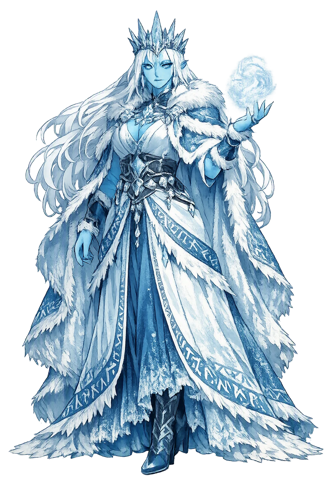
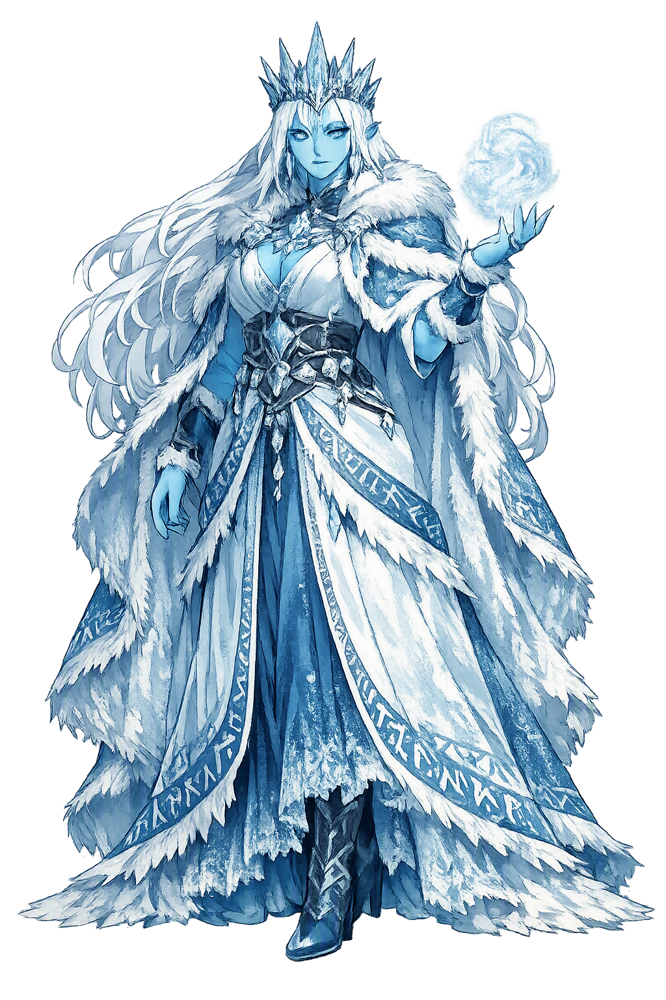

Unicode restoration and ASCII comparison
ᛒᛁᛋᛏᛚᛅ
The name in its original Norse form. Bestla (ᛒᛁᛋᛏᛚᛅ) is attested in the source tradition — “Bark, bast”. Its original diacritics and script distinctions carry the full phonetic and orthographic weight of the source tradition.
bestla
The plain bestla form is identical to the Unicode restoration. Because this name is already written in Latin letters, no diacritics, stress, or script information were lost — only capitalization differs.
Bestla
The Unicode restoration does not need to recover lost marks for Bestla. Its value is canonical spelling and consistent cataloguing, not the reconstruction of erased orthography. The domain is readable as-is to both DNS and humanity.
Bestla.com → bestla.com
The non-ASCII characters in Bestla are encoded while the ASCII remains visible. To the DNS, it is Punycode. To humanity, it is Bestla.
How Bestla travels from ancient script to the modern URL
Owned, ideal, and ASCII forms of Bestla
Bestla
Restores ᛒᛁᛋᛏᛚᛅ. The full Unicode restoration. bestla.com is not in the PuniCodex collection — it is watched for release; if it drops, this temple upgrades to an owned flagship.
How Bestla was spoken
The Grandmother of the Gods, Out of Giant-Kind
Bestla is the hinge on which the whole divine family turns: the giantess daughter of Bǫlþorn whom Borr, son of Búri, took to wife, and who bore him the three brothers who made the world — Óðinn, Vili, and Vé. Through her the Æsir descend from giant-kind on the mother's side, and through her brother it was that Óðinn, by his own account in Hávamál, learned nine mighty spells.
Her father, named only in the Eddas: a giant of the old kind, grandfather of the gods through his daughter's marriage.
Her husband, son of Búri the first god, licked free of the rime-stones by the cow Auðhumla — the bridge from god-kind into giant-kind.
Her three sons: the brothers who slew Ymir and built the world from his body, and gave the first humans breath, wit, and senses.
Hávamál 140: Óðinn learned nine mighty songs from the famed son of Bǫlþorn — Bestla's brother, the maternal uncle who taught the Allfather.
Stories of Bestla
Bestla has no myth of her own — no journey, no contest, no speech survives in her name. What the sources give instead is a position so consequential that the entire pantheon hangs from it: she is the point where the family tree of the gods roots itself in the giants' world.
Snorri sets out the pedigree of the Æsir in a single breath: Búri was the first, licked out of the salt rime-stones by the cow Auðhumla; his son was Borr, 'who married the woman named Bestla, daughter of the giant Bǫlþorn, and they had three sons: the first was called Óðinn, the second Vili, the third Vé'. With that one sentence the gods acquire a giantess for a grandmother, and the whole subsequent history of the cosmos — the killing of Ymir, the making of the world from his body, the gifts to the first humans Ask and Embla — is set in motion by Óðinn and his brothers, Bestla's sons.
The genealogy is never treated as a scandal in the sources; it is simply stated, like a fact of weather. Yet its implications run through the whole mythology: the Æsir are kin to the jötnar they fight, and the Allfather himself is half a giant by the mother's side.
Bestla's one appearance in the Poetic Edda is indirect and extraordinary. Óðinn, recounting his winning of wisdom, says: 'Nine mighty spells I got from the famed son of Bǫlþorn, Bestla's father, and I got a draught of the precious mead, poured from Óðrǫrir.' The famed son of Bǫlþorn is Bestla's brother — Óðinn's maternal uncle. On the giants' side of his own blood, the god who would later hang nine nights on the tree for the runes first received songs of power from his mother's kin.
Scholars have long noted how precisely this fits the old Germanic pattern Tacitus describes: the special bond between a man and his mother's brother, the avunculate, held sacred among the Germanic peoples. In the one place the Edda lets Bestla's family act, it acts as a mother's family should — teaching, gifting, initiating her son.
Outside the two narratives, the tradition files Bestla where it thinks she belongs: the þulur, the great rhymed name-lists appended to the Prose Edda, count her among the heiti of troll-women — the giantesses of the old world. The lists preserve dozens of jötunn names that no surviving myth ever uses; Bestla alone among them is the mother of the gods. The catalogue keeps her with her own kind even as the genealogy marries her out of it — the two facts the sources never try to reconcile, because they never saw a contradiction.
Bestla is the patron of everything a lineage does not say about itself. The Eddas give her two clauses and no voice; the mythology then spends every remaining page on her descendants. She stands at the exact seam where the official story begins — the grandmother behind the genealogy, the giant inside the gods. That is a truer picture of ancestry than any pedigree chart admits: the line you are named for is never the whole line. Her name, if the old guess is right, means the bast that binds — bark peeled and twisted into rope. Whether or not the etymology holds, the function does: she is the tie that joined two worlds, and the world that resulted never stopped being both.
Enter Extended Lore